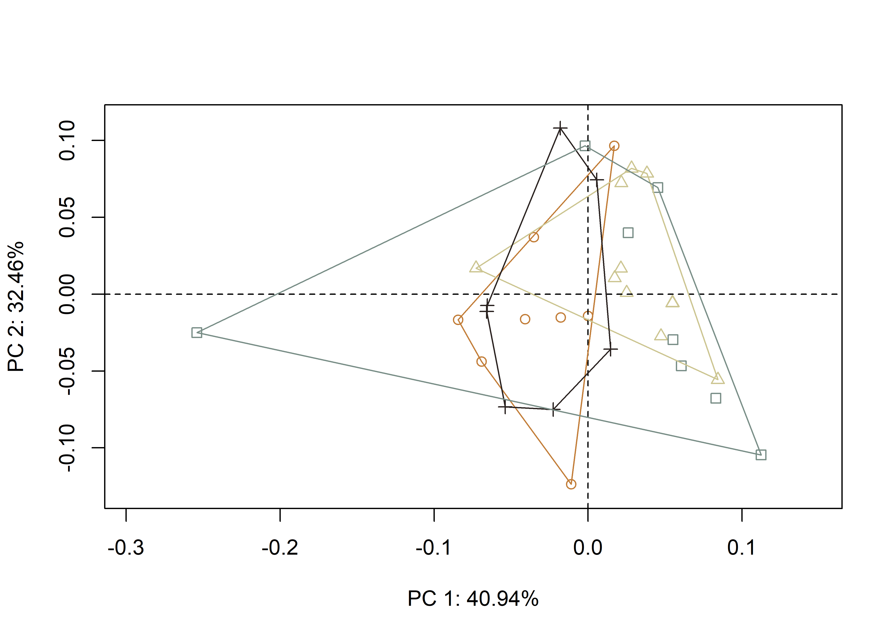
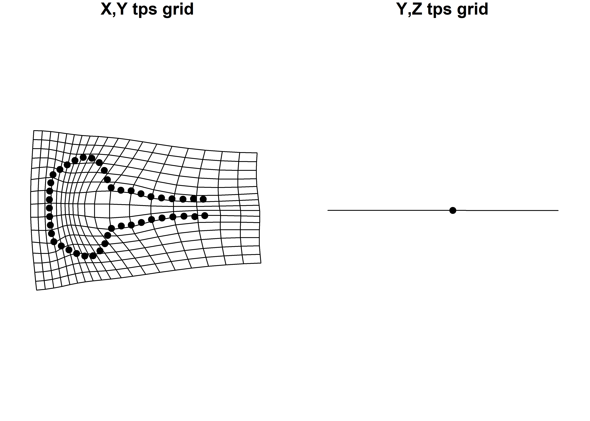
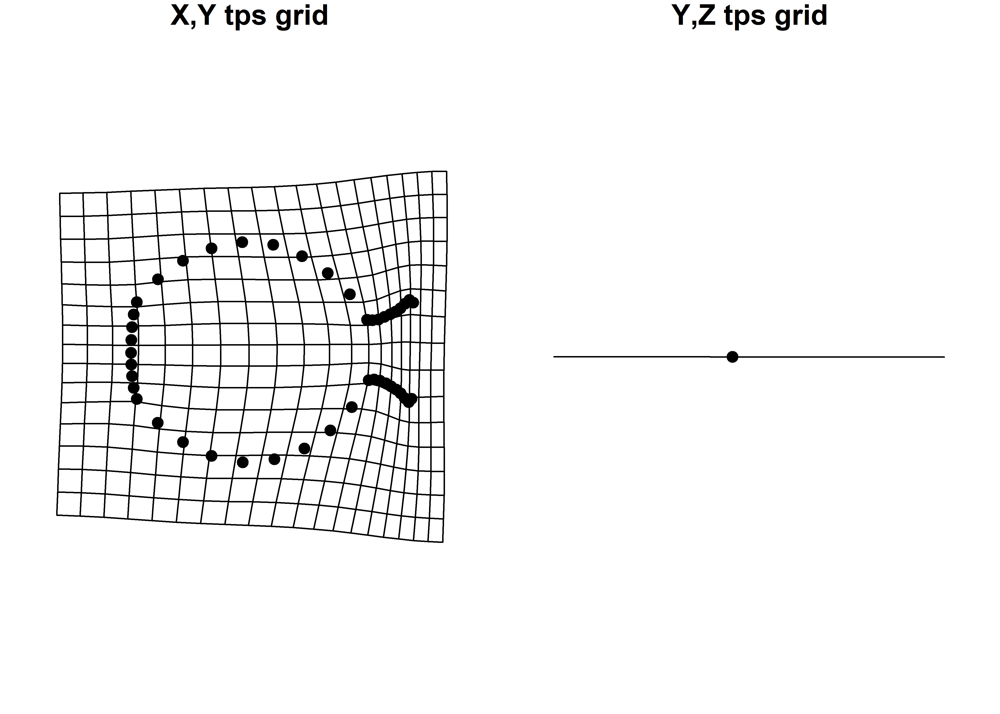
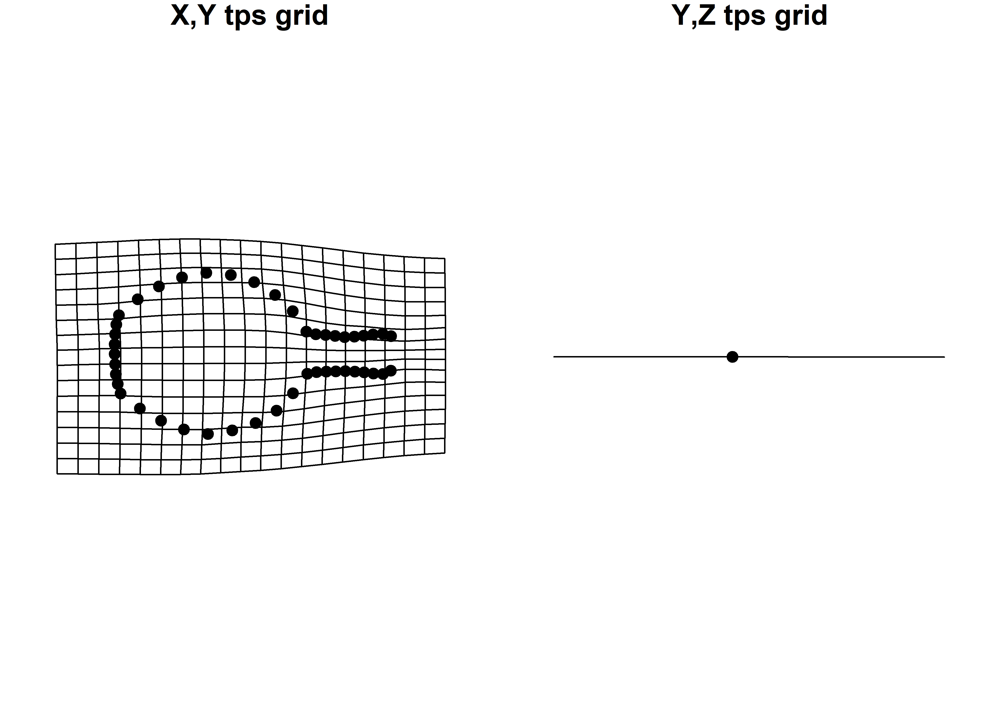
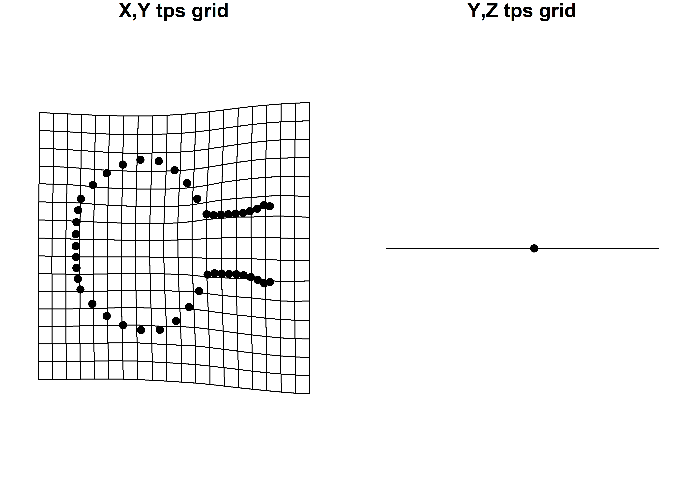

Chapter 6 Vessel Forms and Elements
6.1 Load packages + data
# load packages
#devtools::install_github("mlcollyer/RRPP")
#devtools::install_github("geomorphR/geomorph", ref = "Stable", build_vignettes = TRUE)
library(here)
library(geomorph)
library(tidyverse)
library(wesanderson)
# read GM data
source('readmulti.csv.R')
setwd("./data2")
filelist <- list.files(pattern = ".csv")
coords <- readmulti.csv(filelist)
setwd("../")
# read qualitative data
qdata <- read.csv("qdata.csv",
header = TRUE,
row.names = 1)
qdata <- qdata[match(dimnames(coords)[[3]],
rownames(qdata)),]
qdata <- qdata %>%
unite("merged", group:type, remove = FALSE)
# exclude phytomorph - need multiples
# result = analysis will compare bottles and jars adorned with anthropomorph
# and zoomorph decorative elements
qdata <- filter(qdata, group != "phytomorph")6.2 Generalised Procrustes Analysis
Landmark data were aligned to a global coordinate system (Kendall 1981, 1984; Slice 2001), achieved through generalised Procrustes superimposition (Rohlf and Slice 1990) performed in R 4.0.3 (R Core Development Team, 2020) using the geomorph library v. 3.3.2 (Adams et al. 2017; Adams and Otárola-Castillo 2013). Procrustes superimposition translates, scales, and rotates the coordinate data to allow for comparisons among objects (Gower 1975; Rohlf and Slice 1990). The geomorph package uses a partial Procrustes superimposition that projects the aligned specimens into tangent space subsequent to alignment in preparation for the use of multivariate methods that assume linear space (Rohlf 1999; Slice 2001).
# gpa
Y.gpa <- gpagen(coords,
PrinAxes = TRUE,
ProcD = TRUE,
Proj = TRUE,
print.progress = FALSE)
# geomorph data frame
gdf <- geomorph.data.frame(shape = Y.gpa$coords,
size = Y.gpa$Csize,
merged = qdata$merged)
# render 3d gpa plot
#plot(Y.gpa)
# gpa plot
#knitr::include_graphics('images/gpa3d.png')
# add centroid size to qdata
qdata$csz <- Y.gpa$Csize
# print updated qdata with centroid size
knitr::kable(qdata,
align = "lccccc",
caption = "Modified attributes included in qdata.")| merged | group | type | csz | |
|---|---|---|---|---|
| 1608111 | anthropomorph_jar | anthropomorph | jar | 585.9878 |
| 1608122 | zoomorph_bottle | zoomorph | bottle | 578.2339 |
| 1608124 | zoomorph_bottle | zoomorph | bottle | 543.0810 |
| 1608125 | zoomorph_bottle | zoomorph | bottle | 538.4608 |
| 1608126 | zoomorph_jar | zoomorph | jar | 613.1277 |
| 1608129 | zoomorph_jar | zoomorph | jar | 511.8743 |
| 1608131 | zoomorph_jar | zoomorph | jar | 681.0963 |
| 1608140 | zoomorph_bottle | zoomorph | bottle | 558.2951 |
| 1608141 | anthropomorph_bottle | anthropomorph | bottle | 511.1698 |
| 1608163 | zoomorph_jar | zoomorph | jar | 432.3418 |
| 160839 | zoomorph_jar | zoomorph | jar | 416.4591 |
| 160844 | anthropomorph_jar | anthropomorph | jar | 607.4952 |
| 160846 | zoomorph_bottle | zoomorph | bottle | 545.1291 |
| 160847 | anthropomorph_bottle | anthropomorph | bottle | 416.4516 |
| 160848 | anthropomorph_jar | anthropomorph | jar | 468.6945 |
| 160849 | anthropomorph_bottle | anthropomorph | bottle | 453.0625 |
| 160850 | anthropomorph_bottle | anthropomorph | bottle | 751.5635 |
| 160852 | zoomorph_bottle | zoomorph | bottle | 512.1550 |
| 160852x | anthropomorph_jar | anthropomorph | jar | 596.2446 |
| 160859 | zoomorph_bottle | zoomorph | bottle | 512.3332 |
| 160860 | anthropomorph_jar | anthropomorph | jar | 449.6768 |
| 160868 | zoomorph_bottle | zoomorph | bottle | 674.0455 |
| 160873 | anthropomorph_jar | anthropomorph | jar | 590.1911 |
| 160875 | anthropomorph_bottle | anthropomorph | bottle | 687.1416 |
| 160876 | anthropomorph_bottle | anthropomorph | bottle | 591.4190 |
| 160881 | anthropomorph_jar | anthropomorph | jar | 416.0126 |
| 160882 | zoomorph_bottle | zoomorph | bottle | 544.4697 |
| 160884 | zoomorph_jar | zoomorph | jar | 418.5339 |
| 160886 | zoomorph_bottle | zoomorph | bottle | 441.5053 |
| 160888 | anthropomorph_bottle | anthropomorph | bottle | 379.4152 |
| 160892 | anthropomorph_jar | anthropomorph | jar | 384.3096 |
| 205854 | anthropomorph_bottle | anthropomorph | bottle | 407.5996 |
| 206614 | zoomorph_jar | zoomorph | jar | 458.8122 |
| PEX35 | zoomorph_bottle | zoomorph | bottle | 635.8740 |
6.2.1 Boxplot
# attributes for boxplot
csz <- qdata$csz
merged <- qdata$merged
pal <- wes_palette("Moonrise2")
# boxplot of vessel centroid size by merged
csz.type <- ggplot(qdata, aes(x = merged, y = csz, color = merged)) +
geom_boxplot() +
geom_dotplot(binaxis = 'y', stackdir = 'center', dotsize = 0.3) +
scale_colour_manual(values = pal) +
theme(legend.position = "none") +
theme(axis.text.x = element_text(angle = 90, vjust = 1, hjust=1)) +
labs(x = 'Group', y = 'Centroid Size')
# render plot
csz.type## Bin width defaults to 1/30 of the range of the data. Pick better value with `binwidth`.Figure 6.1: Boxplot of centroid size by spatial/temporal unit.
6.3 Principal Components Analysis
Principal components analysis (Jolliffe 2002) was used to visualise shape variation among the bottles. The shape changes described by each principal axis are commonly visualised using thin-plate spline warping of a reference 3D mesh (Klingenberg 2013; Sherratt et al. 2014).
# principal components analysis
pca<-gm.prcomp(Y.gpa$coords)
summary(pca)##
## Ordination type: Principal Component Analysis
## Centering by OLS mean
## Orthogonal projection of OLS residuals
## Number of observations: 34
## Number of vectors 33
##
## Importance of Components:
## Comp1 Comp2 Comp3 Comp4 Comp5 Comp6 Comp7
## Eigenvalues 0.004439028 0.003520131 0.001348467 0.0005801858 0.0003425897 0.0002534948 8.618724e-05
## Proportion of Variance 0.409390736 0.324645238 0.124362781 0.0535078173 0.0315954425 0.0233786351 7.948645e-03
## Cumulative Proportion 0.409390736 0.734035974 0.858398756 0.9119065730 0.9435020155 0.9668806506 9.748293e-01
## Comp8 Comp9 Comp10 Comp11 Comp12 Comp13 Comp14
## Eigenvalues 6.058338e-05 5.117651e-05 3.249072e-05 3.151383e-05 2.038198e-05 1.554888e-05 1.396917e-05
## Proportion of Variance 5.587321e-03 4.719770e-03 2.996467e-03 2.906373e-03 1.879735e-03 1.434000e-03 1.288311e-03
## Cumulative Proportion 9.804166e-01 9.851364e-01 9.881329e-01 9.910392e-01 9.929190e-01 9.943530e-01 9.956413e-01
## Comp15 Comp16 Comp17 Comp18 Comp19 Comp20 Comp21
## Eigenvalues 9.829685e-06 6.900759e-06 6.314543e-06 5.290447e-06 3.999721e-06 3.406899e-06 2.308270e-06
## Proportion of Variance 9.065458e-04 6.364247e-04 5.823607e-04 4.879131e-04 3.688755e-04 3.142024e-04 2.128810e-04
## Cumulative Proportion 9.965478e-01 9.971842e-01 9.977666e-01 9.982545e-01 9.986234e-01 9.989376e-01 9.991505e-01
## Comp22 Comp23 Comp24 Comp25 Comp26 Comp27 Comp28
## Eigenvalues 1.778245e-06 1.496719e-06 1.226482e-06 1.215542e-06 9.279665e-07 8.528053e-07 5.825998e-07
## Proportion of Variance 1.639992e-04 1.380354e-04 1.131127e-04 1.121037e-04 8.558201e-05 7.865023e-05 5.373045e-05
## Cumulative Proportion 9.993145e-01 9.994525e-01 9.995656e-01 9.996777e-01 9.997633e-01 9.998420e-01 9.998957e-01
## Comp29 Comp30 Comp31 Comp32 Comp33
## Eigenvalues 4.147759e-07 3.276474e-07 2.311869e-07 1.530809e-07 4.355478e-09
## Proportion of Variance 3.825284e-05 3.021738e-05 2.132129e-05 1.411793e-05 4.016853e-07
## Cumulative Proportion 9.999339e-01 9.999642e-01 9.999855e-01 9.999996e-01 1.000000e+00# set plot parameters (types)
pch.gps.type <- c(0:3)[as.factor(merged)]
col.gps.type <- pal[as.factor(merged)]
col.hull.type <- c("#C27D38","#CCC591","#29211F","#798E87")
# plot pca by comb
pc.plot.type <- plot(pca,
asp = 1,
pch = pch.gps.type,
col = col.gps.type)
shapeHulls(pc.plot.type,
groups = merged,
group.cols = col.hull.type)
6.3.1 Minima/maxima of PC1/2 with warp grids
# plot x/y maxima/minima
## x - minima
ref <- mean.shape <- mshape(Y.gpa$coords)
plotRefToTarget(M1 = ref,
M2 = pca$shapes$shapes.comp1$min,
method = "TPS")
plotRefToTarget(M1 = ref,
M2 = pca$shapes$shapes.comp1$max,
method = "TPS")
plotRefToTarget(M1 = ref,
M2 = pca$shapes$shapes.comp2$min,
method = "TPS")
plotRefToTarget(M1 = ref,
M2 = pca$shapes$shapes.comp2$max,
method = "TPS")
# pca warp
#knitr::include_graphics('images/pca-warp-botjar.jpg')6.4 Vessel size and shape
A residual randomisation permutation procedure (RRPP; n = 10,000 permutations) was used for all Procrustes ANOVAs (Adams and Collyer 2015; Michael L. Collyer and Adams 2018), which has higher statistical power and a greater ability to identify patterns in the data should they be present (Anderson and Ter Braak 2003). To assess whether shape changes differ by group (geography and time), Procrustes ANOVAs (Goodall 1991) were also run that enlist effect-sizes (zscores) computed as standard deviates of the generated sampling distributions (M. L. Collyer, Sekora, and Adams 2015).
# size as a function of merged?
fit.size.merged <- procD.lm(size ~ merged,
data = gdf,
print.progress = FALSE,
iter = 9999)
# Procrustes ANOVA: do sizes differ?
anova(fit.size.merged)##
## Analysis of Variance, using Residual Randomization
## Permutation procedure: Randomization of null model residuals
## Number of permutations: 10000
## Estimation method: Ordinary Least Squares
## Sums of Squares and Cross-products: Type I
## Effect sizes (Z) based on F distributions
##
## Df SS MS Rsq F Z Pr(>F)
## merged 3 12739 4246.5 0.04112 0.4288 -0.6227 0.7315
## Residuals 30 297099 9903.3 0.95888
## Total 33 309838
##
## Call: procD.lm(f1 = size ~ merged, iter = 9999, data = gdf, print.progress = FALSE)# shape as a function of merged?
fit.shape.merged <- procD.lm(shape ~ merged,
data = gdf,
print.progress = FALSE,
iter = 9999)
# Procrustes ANOVA: do shapes differ?
anova(fit.shape.merged)##
## Analysis of Variance, using Residual Randomization
## Permutation procedure: Randomization of null model residuals
## Number of permutations: 10000
## Estimation method: Ordinary Least Squares
## Sums of Squares and Cross-products: Type I
## Effect sizes (Z) based on F distributions
##
## Df SS MS Rsq F Z Pr(>F)
## merged 3 0.04367 0.014556 0.12204 1.3901 0.94034 0.1751
## Residuals 30 0.31415 0.010472 0.87796
## Total 33 0.35782
##
## Call: procD.lm(f1 = shape ~ merged, iter = 9999, data = gdf, print.progress = FALSE)6.5 Morphological disparity
# morphological disparity: do either of the groups display greater
# size variation among individuals relative to the other group?
morphol.disparity(fit.size.merged,
groups = qdata$merged,
data = gdf,
print.progress = FALSE,
iter = 9999)##
## Call:
## morphol.disparity(f1 = fit.size.merged, groups = qdata$merged, iter = 9999, data = gdf, print.progress = FALSE)
##
##
##
##
## Randomized Residual Permutation Procedure Used
## 10000 Permutations
##
## Procrustes variances for defined groups
## anthropomorph_bottle anthropomorph_jar zoomorph_bottle zoomorph_jar
## 16769.826 7385.205 3489.322 9353.729
##
##
## Pairwise absolute differences between variances
## anthropomorph_bottle anthropomorph_jar zoomorph_bottle zoomorph_jar
## anthropomorph_bottle 0.000 9384.621 13280.504 7416.098
## anthropomorph_jar 9384.621 0.000 3895.883 1968.524
## zoomorph_bottle 13280.504 3895.883 0.000 5864.407
## zoomorph_jar 7416.098 1968.524 5864.407 0.000
##
##
## P-Values
## anthropomorph_bottle anthropomorph_jar zoomorph_bottle zoomorph_jar
## anthropomorph_bottle 1.0000 0.0799 0.0036 0.1950
## anthropomorph_jar 0.0799 1.0000 0.4540 0.7411
## zoomorph_bottle 0.0036 0.4540 1.0000 0.2734
## zoomorph_jar 0.1950 0.7411 0.2734 1.0000# morphological disparity: do either of the groups display greater
#shape variation among individuals relative to the other group?
morphol.disparity(fit.shape.merged,
groups = qdata$merged,
data = gdf,
print.progress = FALSE,
iter = 9999)##
## Call:
## morphol.disparity(f1 = fit.shape.merged, groups = qdata$merged, iter = 9999, data = gdf, print.progress = FALSE)
##
##
##
##
## Randomized Residual Permutation Procedure Used
## 10000 Permutations
##
## Procrustes variances for defined groups
## anthropomorph_bottle anthropomorph_jar zoomorph_bottle zoomorph_jar
## 0.018351301 0.006762281 0.005859067 0.006970319
##
##
## Pairwise absolute differences between variances
## anthropomorph_bottle anthropomorph_jar zoomorph_bottle zoomorph_jar
## anthropomorph_bottle 0.00000000 0.0115890197 0.0124922345 0.011380982
## anthropomorph_jar 0.01158902 0.0000000000 0.0009032148 0.000208038
## zoomorph_bottle 0.01249223 0.0009032148 0.0000000000 0.001111253
## zoomorph_jar 0.01138098 0.0002080380 0.0011112528 0.000000000
##
##
## P-Values
## anthropomorph_bottle anthropomorph_jar zoomorph_bottle zoomorph_jar
## anthropomorph_bottle 1.0000 0.0611 0.0145 0.0976
## anthropomorph_jar 0.0611 1.0000 0.8652 0.9655
## zoomorph_bottle 0.0145 0.8652 1.0000 0.8354
## zoomorph_jar 0.0976 0.9655 0.8354 1.00006.6 Mean shapes
# subset landmark coordinates to produce mean shapes
new.coords<-coords.subset(A = Y.gpa$coords,
group = qdata$merged)
names(new.coords)## [1] "anthropomorph_bottle" "anthropomorph_jar" "zoomorph_bottle" "zoomorph_jar"# group shape means
mean <- lapply(new.coords, mshape)
# plot mean shapes (type)
plot(mean$anthropomorph_bottle)
plot(mean$anthropomorph_jar)
plot(mean$zoomorph_bottle)
plot(mean$zoomorph_jar)
# comparison plots
plotRefToTarget(mean$anthropomorph_bottle,
mean$zoomorph_bottle,
method = c("points"),
mag = 1)
plotRefToTarget(mean$anthropomorph_jar,
mean$zoomorph_jar,
method = c("points"),
mag = 1)
#knitr::include_graphics('images/mshape.png')